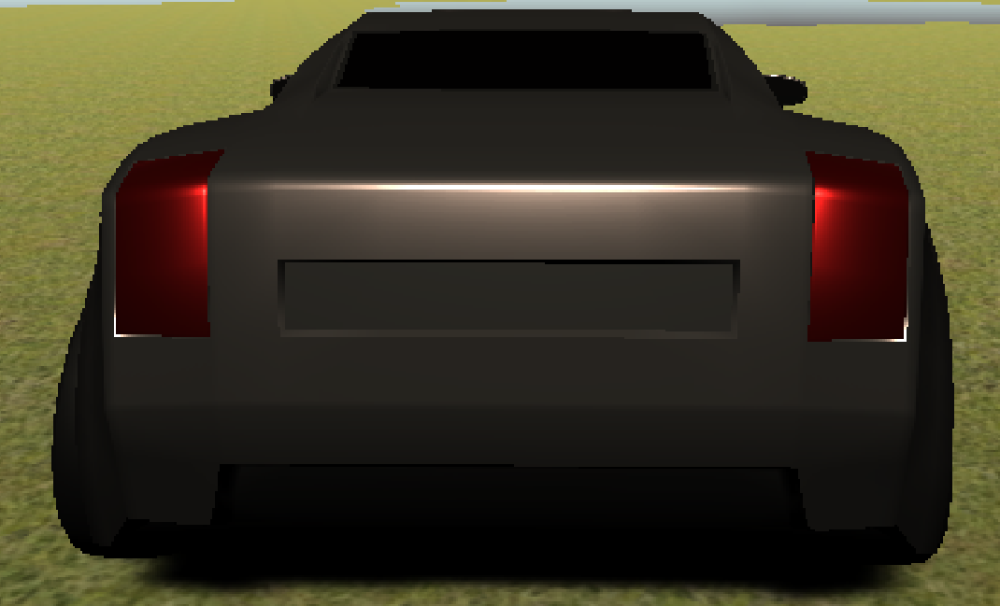

In this two week course, we learned a lot about game design using Unity. We worked on many projects, ranging in difficulty from just creating a scene to creating a working terrain complete with a driving car. It was both fun and frustrating because at times it didn't work properly. The times when it did work, however, I enjoyed greatly (especially the car game).